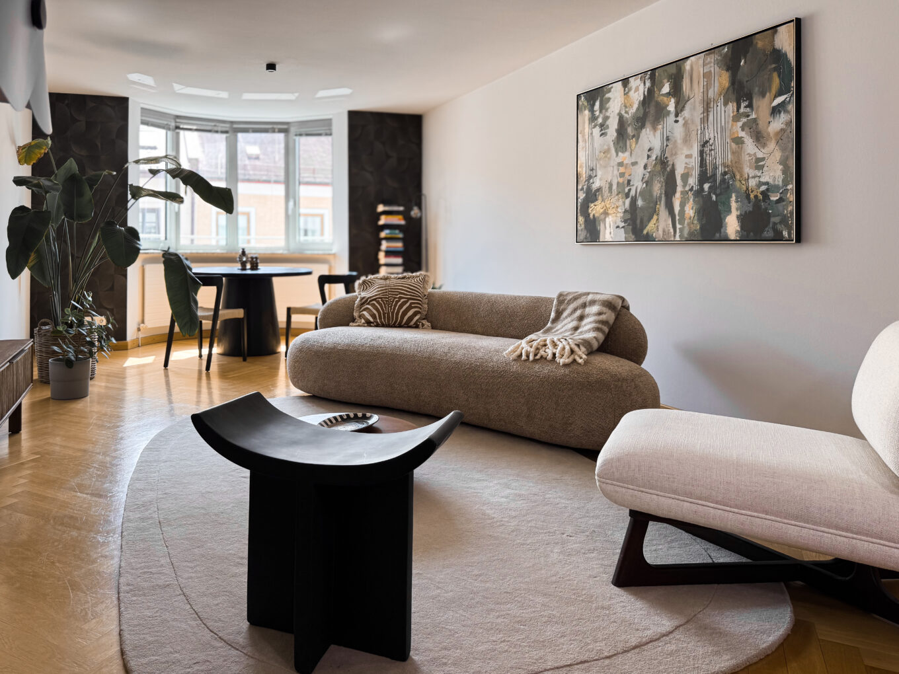

Verkaufsexpertin · Moderatorin · Markenbotschafterin
NINA WIRTZ — VERKAUF. MARKEN. MENSCHEN.
Seit über 20 Jahren verbinde ich vor der Kamera Produkte mit Menschen – mit Begeisterung, Glaubwürdigkeit und einem feinen Gespür dafür, was Kunden wirklich erreicht.
Mehr erfahren20+
Jahre Live-TV
Tausende
Stunden Live-Verkauf
200 Mio. €
TV-Umsatz

Über mich
Verkauf ist eine Herzensangelegenheit
Nina Wirtz ist Verkaufsexpertin, Moderatorin und Markenbotschafterin. Seit über 20 Jahren steht sie vor der Kamera und hat in ihrer Teleshopping-Karriere über 200 Millionen Euro Umsatz mitgestaltet.
... denn es geht doch dabei um menschliche Beziehungen! Was wünschen wir uns am allermeisten von den Menschen, mit denen wir uns umgeben? Liebe und Anerkennung. Also: Wie kannst du deinen Kunden am effektivsten abholen? Indem du dein Herz für ihn öffnest und ihm das gibst, wonach er sich am meisten sehnt!
Ich bringe meinen gesammelten Erfahrungsschatz aus über 20 Jahren Vertriebs- und Home-Shopping-Expertise als Verkaufsexpertin, Moderatorin und Markenbotschafterin ein.
3 Schlüssel des Verkaufstalents
Menschen verstehen
Es geht nicht um dich, es geht um deinen Kunden.
Produkte emotional übersetzen
Kunden kaufen kein Produkt – sie kaufen das Gefühl dahinter.
Vertrauen schaffen
Mach dein Herz auf und lerne deinen Kunden zu lieben.
Expertise
Meine Expertise
Live & TV
Über 20 Jahre Erfahrung vor der Kamera – von Fashion über Beauty bis Lifestyle.
Verkaufs- & Markenberatung
Ich zeige Unternehmen und Marken, wie Produkte Menschen wirklich erreichen.

Moderation & Brand Collaborations
Professionelle Moderation und glaubwürdige Kooperationen für ausgewählte Marken.
Moderation & Brands
Live ist mein Element
Seit mehr als zwei Jahrzehnten stehe ich im Homeshopping vor der Kamera. Fashion, Schuhe, Beauty und Lifestyle: Ich habe unterschiedlichste Produktwelten verkauft und Marken über viele Jahre begleitet. Live-TV hat mich gelehrt, innerhalb weniger Sekunden zu erkennen, welche Geschichte ein Produkt braucht – und wie aus Information Begehrlichkeit entsteht.


Eine weitere Leidenschaft
Eine weitere Leidenschaft: Räume.
Neben ihrer Arbeit vor der Kamera gestaltet Nina gemeinsam mit ihrer Tochter Aimée bei Wirtz Interior individuelle, emotionale Raumkonzepte – für Menschen, die auch zuhause ihre eigene Frequenz leben wollen.
Wirtz Interior entdecken →Kontakt
Lassen Sie uns zusammenarbeiten.
Sie suchen eine erfahrene Moderatorin, eine glaubwürdige Markenbotschafterin oder möchten Ihr Produkt verkaufsstärker positionieren? Ich freue mich über Anfragen von Unternehmen, Agenturen und Marken für ausgewählte Projekte und Kooperationen.